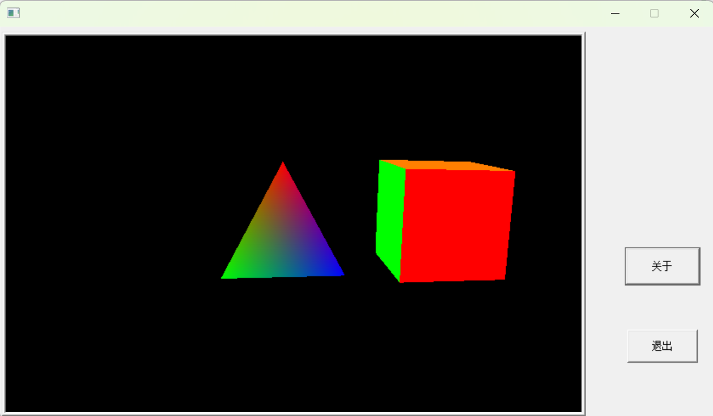

WinFormOpenGL.zip为采用纯WindowsAPI函数封装的windows窗口类型的OpenGL应用程序(visual studio 2022)模版
WinFormGLFWApp.zip 为使用GLFW库封装的windows窗口类型的OPenGL应用程序(visual studio 2022)模版
网络上关于OpenGL应用程序很多，主要采用freeGlut和glfw两种结构，近些年以glfw封装的程序结构为主。这两种程序结构均是对窗口程序进行了封装，屏蔽了创建OpenGL程序过程中创建窗口Content的细节，通过几行代码就生成的OpenGL窗口应用程序，使得OpenGL程序开发简洁化，使得初学者可以集中精力学习OpenGL编程的主要基础性原理。这种封装也存在一定的不足之处，就是生成的OpenGL窗口程序占用windows窗口的整个部分，不便于通过窗口的可视化控件（按钮、编辑框）控制OpenGL内部的物体。为此我在WindowAPI函数基础上封装了windows窗口的OpenGL程序类框架GLContext，可以很容易的将OpenGL窗口内嵌到windows窗口中的任意子控件上。
为了使用OpenGL 1.1以上的API函数，GLContext内嵌的Glad.h和glad.c文件，关于采用Glad方案对OpenGL扩展函数的引入模式可以参阅OpenGL-GLAD配置_opengl glad-CSDN博客的文章，如果GLContext框架内嵌的glad.c和glad.c文件不适合你的机器配置可以直接去https://glad.dav1d.de/网站下载适合你当前机器的文件替换GLContext框架目录中的文件即可。
通过GLContext类和Win::WinForm的封装，我们可以很容易的创建windows窗口的OpenGL应用程序：
x1class WindowsForm :public Win::WinForm, public GLContext2{3private:4 Win::Button m_AboutButton;5 Win::Button m_CloseButton;6public:7 WindowsForm() :Win::WinForm(), GLContext()8 {9
10 };11 virtual void Init_Event(HWND hDlg, UINT message, WPARAM wParam, LPARAM lParam)12 {13 HWND hWnd = hDlg;// ::GetDlgItem(hDlg, IDC_OPENGLVIEW);14 m_AboutButton.set(hDlg, IDD_ABOUTBOX);15 m_CloseButton.set(hDlg, IDM_EXIT);16 17 HWND hOpenGLWnd = ::GetDlgItem(hDlg, IDC_OPENGLVIEW);18 19 //如果我们希望OpenGL窗口占用整个windows窗口，可以直接将hWnd传给CreateOpenGLContext函数20 bool succ = CreateOpenGLContext(hOpenGLWnd, TRUE);21 if (!succ)22 {23 ::MessageBox(hWnd, L"初始化OpenGL窗口发生错误", L"系统信息", MB_OK);24 return;25 }26 return;27 };28 virtual void Resize_Event(HWND hDlg, UINT message, WPARAM wParam, LPARAM lParam)29 {30 WindowResize(LOWORD(lParam), HIWORD(lParam));31 }32 virtual void Destroy_Event(HWND hDlg, UINT message, WPARAM wParam, LPARAM lParam)33 {34 shutdown();35 };36 virtual BOOL OnIdle(LONG lCount)37 {38 GLDrawProcess();39
40 GLContext::swapBuffer();41 return TRUE;42 }43 virtual void Command_Event(HWND hDlg, UINT message, WPARAM wParam, LPARAM lParam)44 {45 int wmId = LOWORD(wParam);46 if (wmId == IDD_ABOUTBOX)47 {48 Win::WinForm::ShowModelDialog(IDD_ABOUTBOX, hDlg, About);// Win::WinForm::DialogWindowProc);49 }50 else if (wmId == IDM_EXIT)51 {52 ::SendMessageW(hDlg, WM_DESTROY, 0, 0);53 }54 }55
56 // virtual void OpenGL_Init(void);57 //virtual void GLDrawProcess();58 // virtual void GLWndResize(GLsizei width, GLsizei height);59
60};
xxxxxxxxxx191WindowsForm g_WinForm;2int APIENTRY wWinMain(_In_ HINSTANCE hInstance,4_In_opt_ HINSTANCE hPrevInstance,5_In_ LPWSTR lpCmdLine,6_In_ int nCmdShow)7{8UNREFERENCED_PARAMETER(hPrevInstance);9UNREFERENCED_PARAMETER(lpCmdLine);10// TODO: 在此处放置代码。12// 初始化全局字符串14LoadStringW(hInstance, IDS_APP_TITLE, szTitle, MAX_LOADSTRING);15LoadStringW(hInstance, IDC_WINMAINAPP, szWindowClass, MAX_LOADSTRING);16g_WinForm.CreateWindowFromReSource(hInstance, IDD_MAINDIALOG);18return g_WinForm.Run();19}
程序运行结果如下：

我们已经将工程封装为Microsoft Visual Studio 的项目模板WinFormOpenGL.zip,下载后将WinFormOpenGL.zip文件拷贝到Microsoft Visual Studio的项目模板目录下C:\Users\Administrator\Documents\Visual Studio 2022\Templates\ProjectTemplates就可以使用了。
附录：GLContext.hpp文件源码
xxxxxxxxxx4511///////////////////////////////////////////////////////////////////////////////2// GLContext.hpp 用于构建Window窗口的OpenGL应用程序框架3// 本头文件是一个独立的头文件，实现了单个头文件构建OpenGL窗口程序，4// OpenGL窗口仅通过CreateOpenGLContext函数创建OpenGL视图，依赖传入的参数决定视图位置5// 默认情况下创建的应用程序基于doublebuffer和深度缓冲区，自动绘制一个正方体和一个三角椎体，并进行选装6// 如果需要创建平行投影的二维视图程序需要重载 OpenGL_Init WindowResize GLDrawProcess三个函数7// 版权所有 刘文庆 2023.11 廊坊8///////////////////////////////////////////////////////////////////////////////9#ifndef __GLCONTEXT_HPP__11#define __GLCONTEXT_HPP__12#include <windows.h>14#include "glad.h"15#include <gl/GL.h>16#include <gl/glu.h> // Header File For The GLu32 Library17//#include "wglext.h"18//#define FREEGLUT_STATIC22//#include "freeglut.h"23#pragma comment(lib,"opengl32.lib")25#pragma comment(lib,"glu32.lib")26#ifndef WGL_ARB_create_context_profile28#define WGL_ARB_create_context_profile 129#define WGL_CONTEXT_CORE_PROFILE_BIT_ARB 0x0000000131#define WGL_CONTEXT_COMPATIBILITY_PROFILE_BIT_ARB 0x0000000232#define WGL_CONTEXT_PROFILE_MASK_ARB 0x912633#define WGL_CONTEXT_MAJOR_VERSION_ARB 0x209136#define WGL_CONTEXT_MINOR_VERSION_ARB 0x209237#define WGL_CONTEXT_LAYER_PLANE_ARB 0x209338#define WGL_CONTEXT_FLAGS_ARB 0x209439#define WGL_CONTEXT_PROFILE_MASK_ARB 0x912640#define WGLEW_ARB_create_context_profile WGLEW_GET_VAR(__WGLEW_ARB_create_context_profile)42#endif /* WGL_ARB_create_context_profile */46typedef HGLRC(WINAPI* PFNWGLCREATECONTEXTATTRIBSARBPROC) (HDC hDC, HGLRC hShareContext, const int* attribList);50//#ifdef WGL_WGLEXT_PROTOTYPES52//HGLRC WINAPI wglCreateContextAttribsARB(HDC hDC, HGLRC hShareContext, const int* attribList);53//#endif54//PFNWGLCREATECONTEXTATTRIBSARBPROC wglCreateContextAttribsARB = NULL;// 创建一个空的函数指针56// 通过wglGetProcAddress对函数寻址, 然后赋值57//wglCreateContextAttribsARB = (PFNWGLCREATECONTEXTATTRIBSARBPROC)wglGetProcAddress("wglCreateContextAttribsARB");58class GLContext60{61protected:62int _format;63HWND _hWnd; //窗口句柄64HDC _hDC; //绘制设备上下文65HGLRC _hRC; //opengl设备上下文 可以理解为opengl对象66BOOL _IsDoubleBuffer = TRUE;68float _AOV = 120.0f;70float _Near = 0.1f;71float _Far = 100.0f;72float _GLVersion = 3.2f;74public:76GLContext();77GLContext(const float c_GLVersion) {78_GLVersion = c_GLVersion;79_format = 0;80_hWnd = 0;81_hDC = 0;82_hRC = 0;83}84~GLContext();85//初始化 GL 建立opengl GLView附着的句柄 是否使用双缓冲区 视角的张开角度 进平面距离 远平面距离87bool CreateOpenGLContext(HWND hWnd, BOOL cIsDoubleBuffer = TRUE,float AOV=45, float cNear=0.1f, float cFar=100.0f,const float c_GLVersion = 3.2f);88//销毁 EGL89void shutdown();90//交换缓冲区92void swapBuffer();93virtual void OpenGL_Init();96virtual void WindowResize(GLsizei width, GLsizei height);97virtual void GLDrawProcess();98private:99static HMODULE _InsideHModleInstance(HMODULE _HModule=NULL,int _Release=false)101{102static HMODULE s_lModleInst = NULL;103if (_HModule != NULL)104{105s_lModleInst = _HModule;106}107else108{109if (_Release == true)110{111FreeLibrary(s_lModleInst);112s_lModleInst = NULL;113}114}115return s_lModleInst;116}117static void* cWGLGetProcAddr(const char* name)119{120auto ret = wglGetProcAddress(name);121if (ret == NULL)122{123ret = GetProcAddress(_InsideHModleInstance(), name);124}125return ret;126}127static bool initgladFuncAddr() noexcept128{129//assert(wglGetCurrentContext() != NULL); // 保证wgl有合适的上下文130HMODULE glInst = LoadLibraryA("opengl32.dll");131_InsideHModleInstance(glInst);132if (gladLoadGLLoader(cWGLGetProcAddr) == 0)133{134return false;135}136if (_InsideHModleInstance() != NULL)137{138_InsideHModleInstance(NULL, true);139//FreeLibrary(glModleInst);140//glModleInst = NULL;141}142return true;143}144};145inline GLContext::GLContext() {147_format = 0;148_hWnd = 0;149_hDC = 0;150_hRC = 0;151}152GLContext::~GLContext() {154shutdown();155}156inline bool GLContext::CreateOpenGLContext(HWND hWnd, BOOL cIsDoubleBuffer, float AOV, float cNear, float cFar, const float c_GLVersion)159{160_hWnd = hWnd;161_GLVersion = c_GLVersion;162DWORD tempPFD = PFD_DRAW_TO_WINDOW | // 像素格式支持windows窗口163PFD_SUPPORT_OPENGL; // 像素格式支持OpenGL164if (cIsDoubleBuffer == TRUE)165{166_IsDoubleBuffer = cIsDoubleBuffer;167tempPFD = tempPFD | PFD_DOUBLEBUFFER; // 像素格式支持双缓冲168}170//声明像素格式描述符171PIXELFORMATDESCRIPTOR pfd = {172sizeof(PIXELFORMATDESCRIPTOR), // Size Of This Pixel Format Descriptor1731, // 版本号174//PFD_DRAW_TO_WINDOW | // 像素格式支持windows窗口175// PFD_SUPPORT_OPENGL | // 像素格式支持OpenGL176//PFD_DOUBLEBUFFER, // 像素格式支持双缓冲177tempPFD,178PFD_TYPE_RGBA, // 像素格式颜色值为RGBA17932, // 像素颜色深度1800, 0, 0, 0, 0, 0, // Color Bits Ignored1810, // No Alpha Buffer1820, // Shift Bit Ignored1830, // No Accumulation Buffer1840, 0, 0, 0, // Accumulation Bits Ignored18516, // 16Bit Z-Buffer (Depth Buffer)1860, // No Stencil Buffer1870, // No Auxiliary Buffer188PFD_MAIN_PLANE, // Main Drawing Layer1890, // Reserved1900, 0, 0 // Layer Masks Ignored191};192_hDC = GetDC(_hWnd); //获取设备DC195unsigned PixelFormat = ChoosePixelFormat(_hDC, &pfd); //从_hDC 中查找有没有匹配 pfd像素格式的索引197if (!SetPixelFormat(_hDC, PixelFormat, &pfd))200{ //将当前_hDC 建立成pfd 这种像素格式和索引，建立后，windows内部将建立各种缓冲区 颜色缓冲区 模板缓冲区 深度缓冲区201return false;202}203////////////////////////////////////////////////////////////////////////////204// 这段代码描述了如何创建OpenGL核心模式的事例---如果不使用该行代码，系统会更具定义的shade中的版本设定系统的OpenGL工作模式205// 根据hdc, 创建一个临时的OpenGL context using wglCreateContext206HGLRC tempRC = wglCreateContext(_hDC);// 创建Render Context207wglMakeCurrent(_hDC, tempRC);// 绑定到device上208// PFNWGLCREATECONTEXTATTRIBSARBPROC代表了wglCreateContextAttribsARB的函数签名210PFNWGLCREATECONTEXTATTRIBSARBPROC wglCreateContextAttribsARB = NULL;// 创建一个空的函数指针211// 通过wglGetProcAddress对函数寻址, 然后赋值212wglCreateContextAttribsARB = (PFNWGLCREATECONTEXTATTRIBSARBPROC)wglGetProcAddress("wglCreateContextAttribsARB");213int InsideGLVersion = (int)(_GLVersion * 10);215int tempGLMajorVersion = InsideGLVersion * 0.1;216int tempGLMinorVersion = InsideGLVersion - tempGLMajorVersion * 10;217int attribList[] = { WGL_CONTEXT_MAJOR_VERSION_ARB, tempGLMajorVersion,//3,219WGL_CONTEXT_MINOR_VERSION_ARB, tempGLMinorVersion,//3,220WGL_CONTEXT_FLAGS_ARB, 0,221WGL_CONTEXT_PROFILE_MASK_ARB,222//WGL_CONTEXT_COMPATIBILITY_PROFILE_BIT_ARB,0, };//定义OpenGL兼容模式223WGL_CONTEXT_CORE_PROFILE_BIT_ARB,0, };//WGL_CONTEXT_COMPATIBILITY_PROFILE_BIT_ARB224//if (OpenGL_Model == 2)226if(InsideGLVersion<33)228{229attribList[7] = WGL_CONTEXT_COMPATIBILITY_PROFILE_BIT_ARB; //兼容模式230}231//else232{233//attribList[7] = WGL_CONTEXT_CORE_PROFILE_BIT_ARB;//核心模式234}235// 调用获取来的函数指针236HGLRC hglrc = wglCreateContextAttribsARB(_hDC, 0, attribList);237if (hglrc == NULL)238{239// MessageBox(NULL, L"不能创建OGL3.3 context\n尝试创建3.2？", L"提示", MB_OK);240attribList[3] = 2;241hglrc = wglCreateContextAttribsARB(_hDC, 0, attribList);242if (hglrc == NULL)243{244// MessageBox(NULL, L"opengl3.2 create failed!", L"提示", MB_OK);245// return false;246}247}248if (hglrc == NULL)250{251hglrc = wglCreateContext(_hDC); //wgl 是window扩展 opengl的函数 wglCreateContext意思是在给定的dc 上建立opengl的设备上下文 并返回句柄252}253// 重新绑定到Null的Render Context上255wglMakeCurrent(NULL, NULL);256// 删除遗留的临时Render Context257// 问题, 这里创建一个临时的RC, 然后创建真正的RC之后, 又删掉这个临时的RC, 这是何必?258wglDeleteContext(tempRC);259_hRC = hglrc;261//////////////////////////////////////////////////////////////////////////263//_hRC = wglCreateContext(_hDC); //wgl 是window扩展 opengl的函数 wglCreateContext意思是在给定的dc 上建立opengl的设备上下文 并返回句柄265if (!wglMakeCurrent(_hDC, _hRC)) { //建立_hDC _hRC 关联 当用opengl进行绘制的时候 实际绘制到dc上 在当前的线程中建立opengl对象 该opengl对象和线程绑定 所以opengl只能在该线程下绘制 在其他线程中绘制要切换设备上下文266return false;267}268initgladFuncAddr();270//gladLoadGL();271this->_AOV = AOV;272this->_Near = cNear;273this->_Far = cFar;274OpenGL_Init();277return true;279}280inline void GLContext::shutdown() {282if (_hRC != NULL) {283wglMakeCurrent(NULL, NULL);284wglDeleteContext(_hRC);285_hRC = NULL;286}287if (_hDC != NULL) {289ReleaseDC(_hWnd, _hDC);290_hDC = NULL;291}292}293inline void GLContext::GLDrawProcess()296{297static GLfloat s_angle = 0.0; // 设置旋转的角度298//gluLookAt(0.0, 0.0, 5.0, 0.0, 0.0, 0.0, 0.0, 1.0, 0.0);299static float s_Camera_z = 1.0f;300glClear(GL_COLOR_BUFFER_BIT | GL_DEPTH_BUFFER_BIT); // 清理颜色缓存和深度缓存302glLoadIdentity(); // 重置矩阵303gluLookAt(0.0, 0.0, s_Camera_z, 0.0, 0.0, 0.0, 0.0, 1.0, 0.0);304glTranslatef(0.0f, 0.0f, -8.0f);306// 设置旋转的角度，这里glRotatef 第1个参数是角度，2～4 参数是指定旋转轴307// 这里我们设置于y轴作旋转轴308glRotatef(s_angle, 0.0, 1.0f, 0.0f);309s_angle += 0.01f;310// 绘制三角锥312// 这里是通过绘制4个三角形来拼接起来的313glTranslatef(-1.5f, 0.0f, 0.0f);314glBegin(GL_TRIANGLES);315// 第1个三角形 前面316glColor3f(1.0f, 0.0f, 0.0f);317glVertex3f(0.0f, 1.0f, 0.0f);318glColor3f(0.0f, 1.0f, 0.0f);319glVertex3f(-1.0f, -1.0f, 1.0f);320glColor3f(0.0f, 0.0f, 1.0f);321glVertex3f(1.0f, -1.0f, 1.0f);322// 第2个三角形 左面324glColor3f(1.0f, 0.0f, 0.0f);325glVertex3f(0.0f, 1.0f, 0.0f);326glColor3f(0.0f, 1.0f, 0.0f);327glVertex3f(-1.0f, -1.0f, -1.0f);328glColor3f(0.0f, 0.0f, 1.0f);329glVertex3f(-1.0f, -1.0f, 1.0f);330// 第3个三角形 右边332glColor3f(1.0f, 0.0f, 0.0f);333glVertex3f(0.0f, 1.0f, 0.0f);334glColor3f(0.0f, 1.0f, 0.0f);335glVertex3f(1.0f, -1.0f, 1.0f);336glColor3f(0.0f, 0.0f, 1.0f);337glVertex3f(1.0f, -1.0f, -1.0f);338// 第4个三角形 后边340glColor3f(1.0f, 0.0f, 0.0f);341glVertex3f(0.0f, 1.0f, 0.0f);342glColor3f(0.0f, 1.0f, 0.0f);343glVertex3f(1.0f, -1.0f, -1.0f);344glColor3f(0.0f, 0.0f, 1.0f);345glVertex3f(-1.0f, -1.0f, -1.0f);346glEnd();348// 绘制一个正方体351glTranslatef(3.0f, 0.0f, 0.0f);352glRotatef(s_angle, 1.0, 0.0f, 0.0f);353glBegin(GL_QUADS);354// 前面355glColor3f(1.0f, 0.0f, 0.0f);356glVertex3f(-1.0f, 1.0f, 1.0f);357glVertex3f(1.0f, 1.0f, 1.0f);358glVertex3f(1.0f, -1.0f, 1.0f);359glVertex3f(-1.0f, -1.0f, 1.0f);360// 左面362glColor3f(0.0f, 1.0f, 0.0f);363glVertex3f(-1.0f, 1.0f, -1.0f);364glVertex3f(-1.0f, -1.0f, -1.0f);365glVertex3f(-1.0f, -1.0f, 1.0f);366glVertex3f(-1.0f, 1.0f, 1.0f);367// 右面369glColor3f(0.0f, 0.0f, 1.0f);370glVertex3f(1.0f, 1.0f, 1.0f);371glVertex3f(1.0f, -1.0f, 1.0f);372glVertex3f(1.0f, -1.0f, -1.0f);373glVertex3f(1.0f, 1.0f, -1.0f);374// 后面376glColor3f(0.5f, 0.5f, 1.0f);377glVertex3f(1.0f, 1.0f, -1.0f);378glVertex3f(1.0f, -1.0f, -1.0f);379glVertex3f(-1.0f, -1.0f, -1.0f);380glVertex3f(-1.0f, 1.0f, -1.0f);381// 上面383glColor3f(1.0f, 0.5f, 0.0f);384glVertex3f(-1.0f, 1.0f, -1.0f);385glVertex3f(-1.0f, 1.0f, 1.0f);386glVertex3f(1.0f, 1.0f, 1.0f);387glVertex3f(1.0f, 1.0f, -1.0f);388// 下面390glColor3f(0.5f, 0.5f, 0.5f);391glVertex3f(1.0f, -1.0f, 1.0f);392glVertex3f(-1.0f, -1.0f, 1.0f);393glVertex3f(-1.0f, -1.0f, -1.0f);394glVertex3f(1.0f, -1.0f, -1.0f);395glEnd();397}399//双缓冲 进行交换401inline void GLContext::swapBuffer()402{403SwapBuffers(_hDC);404}405inline void GLContext::OpenGL_Init()407{408glShadeModel(GL_SMOOTH); // 启用阴影平滑409glClearColor(0.0f, 0.0f, 0.0f, 0.0f); // 黑色背景410glClearDepth(1.0f); // 设置深度缓存411glEnable(GL_DEPTH_TEST); // 启用深度测试412glDepthFunc(GL_LEQUAL); // 所作深度测试的类型413RECT rect;415::GetWindowRect(_hWnd, &rect);416int height = rect.bottom - rect.top;418int width = rect.right - rect.left;419if (height == 0) // 防止被零除420{421height = 1; // 将Height设为1422}423glViewport(0, 0, width, height); // 重置当前的视口424glMatrixMode(GL_PROJECTION); // 选择投影矩阵426glLoadIdentity(); // 重置投影矩阵427// 设置视口的大小429gluPerspective(this->_AOV, (GLfloat)width / (GLfloat)height, this->_Near, this->_Far);430glMatrixMode(GL_MODELVIEW); // 选择模型观察矩阵432}433inline void GLContext::WindowResize(GLsizei width, GLsizei height)435{436if (height == 0) // 防止被零除437{438height = 1; // 将Height设为1439}440glViewport(0, 0, width, height); // 重置当前的视口441glMatrixMode(GL_PROJECTION); // 选择投影矩阵442glLoadIdentity(); // 重置投影矩阵443// 设置视口的大小445gluPerspective(this->_AOV, (GLfloat)width / (GLfloat)height, this->_Near, this->_Far);446glMatrixMode(GL_MODELVIEW); // 选择模型观察矩阵448glLoadIdentity(); // 重置模型观察矩阵449}450#endif